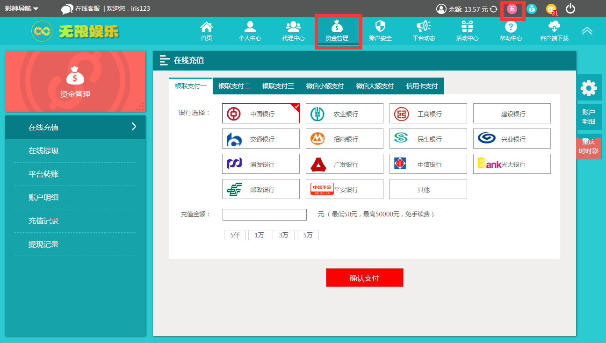
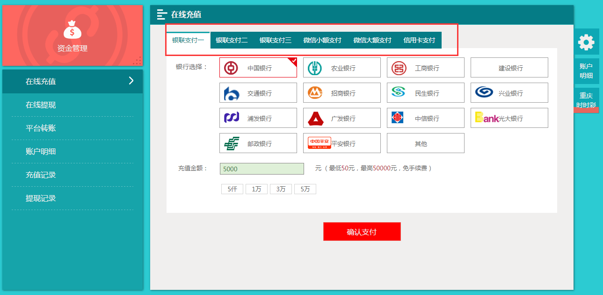
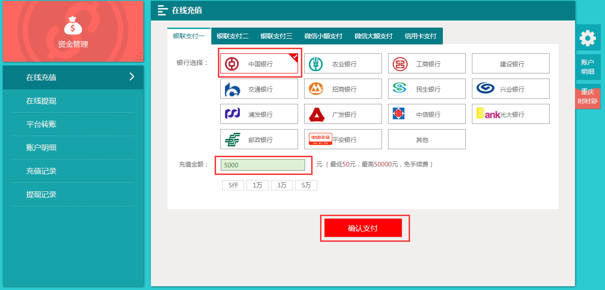
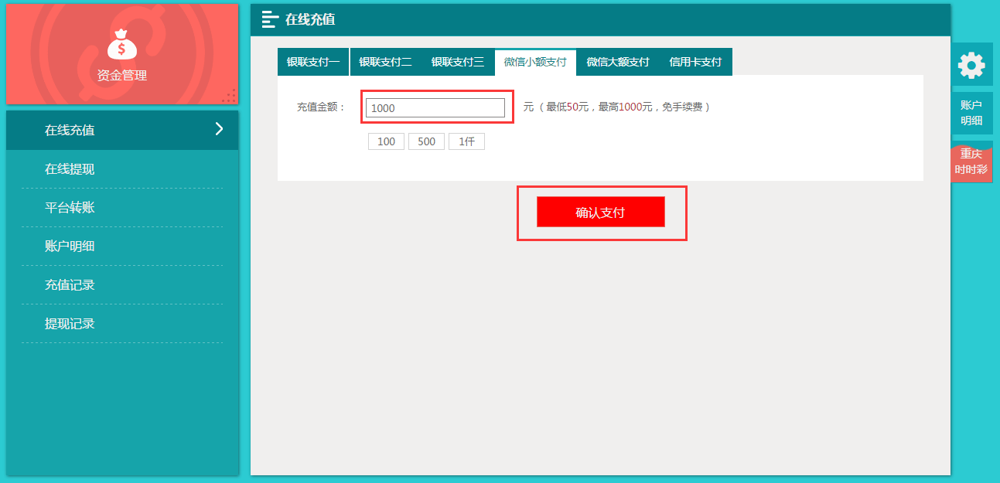
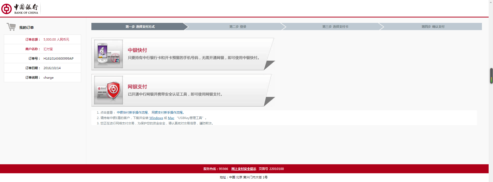
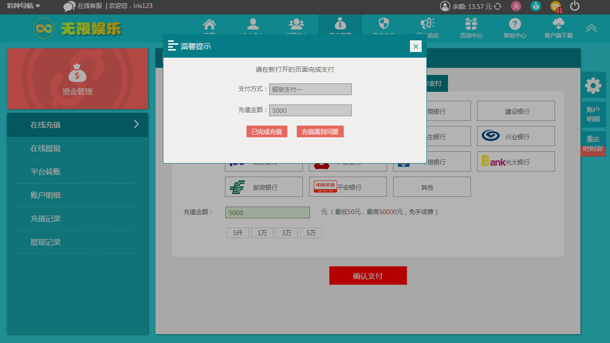

第一步：点击页面顶部【充值】按钮或者点击导航【资金管理】按钮，即可进入充值页面。

第二步：选择支付方式，目前支持的支付方式有各主流银行储蓄卡及信用卡在线支付及微信支付。

第三步： 选择支付银行、填写支付金额后点击“确认支付”在新打开的第三方充值页面完成充值。
1）若选择银联及信用卡支付则选择支付银行、输入支付金额后点击“确认支付”。

2）若选择微信充值则填写充值金额后点击“确认支付”。

第四步：在新打开的第三方充值页面完成充值，如下图是中国银行在线充值页面。

第五步：回到平台，若已完成充值则点击“已完成充值”，若充值遇到问题可联系在线客服解决。
